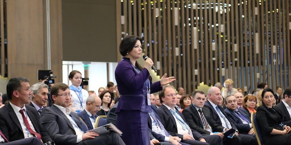
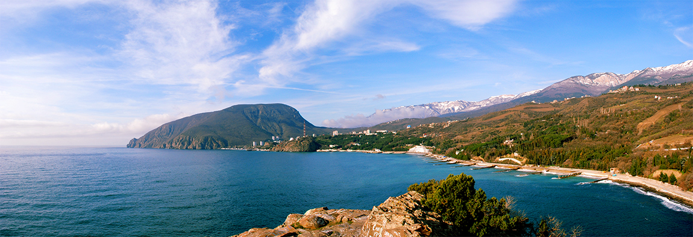
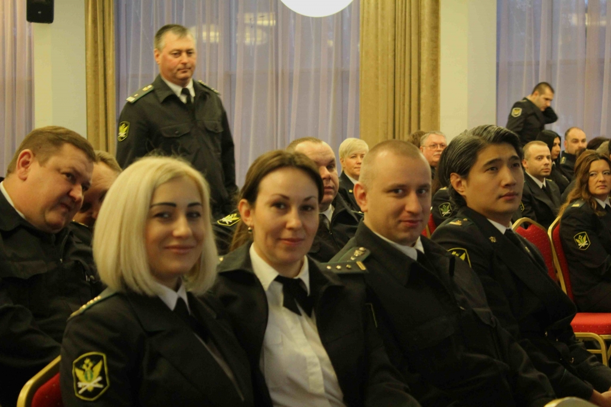

<div class="insidePage">
	<div class="insideContent">
		<div class="textContent">
			<div class="sometextTitle" id="yalta">Деятельность Фонда защиты кредиторов</div>
				<div class="herosubtitle">Деятельность фонда</div>
					<div class="herotext">
			В Крыму прошел трехдневный III Ялтинский Международный экономический форум, в котором приняли участие представители АБС. 
			Участие в работе форума приняли крупнейшие и динамично развивающиеся предприятия машиностроительной, строительной и сельскохозяйственной отраслей. 
			<br>
						
						Деятельность Фонда направлена на защиту и продвижение интересов институциональных инвесторов в России.

Основными направлениями деятельности являются следующие:
Консолидация голосов на собраниях кредиторов
Улучшение анти-кризисного управления путем непосредственного взаимодействиями с менеджментом, кредиторами
Разрешение конфликтов и спорных ситуаций, затрагивающих интересы кредиторов
Иные мероприятия, включая взаимодействие с государствеными органами


			</div>
		<div class="textContent">
			<div class="newsDate">24.04.2017</div>
			<div class="sometextTitle" id="yalta">Представители АРБИРА приняли участие в III Ялтинском Международном экономическом форуме</div>
				<div class="herosubtitle">Представители компании приняли участие в ряде круглых столов.</div>
					<div class="herotext">
			В Крыму прошел трехдневный III Ялтинский Международный экономический форум, в котором приняли участие представители АБС. 
			Участие в работе форума приняли крупнейшие и динамично развивающиеся предприятия машиностроительной, строительной и сельскохозяйственной отраслей. 
			<br>
						
						Представители АРБИРА приняли участие в круглом столе 
							"БАНКОВСКИЙ СЕКТОР - ДРАЙВЕР РАЗВИТИЯ ЭКОНОМИКИ КРЫМА"
На заседании секции обсуждались актуальные вопросы о роли кредитных организаций в социально-экономическом развитии Крыма, в том числе в области поддержки малого и среднего бизнеса, ипотечного кредитования, использования инструментов господдержки в реализации инвестиционных проектов, а также взаимодействия власти и банковского сообщества.
						<strong>СПРАВКА:</strong><br>
Ялтинский международный экономический форум (ЯМЭФ) &ndash; это ежегодное деловое международное мероприятие в экономической сфере,
						проводимое в Крыму. ЯМЭФ <strong>входит в четверку крупнейших экономических форумов 
						России</strong> наряду с Петербургским экономическим форумом, Восточным экономическим
						форумом и Российским инвестиционным форумом в Сочи.
Организаторы Форума &ndash; Правительство Республики Крым, Фонд 
	"Ялтинский международный экономический форум" при поддержке Администрации Президента Российской Федерации.
Участниками ЯМЭФ-2017, который проходит 20, 21 и 22 апреля, стали <strong>более 1500 человек</strong>, в том числе <strong>
			более 150 международных участников</strong> из <strong>порядка 40 стран мира</strong>. 
			Крупнейшую иностранную делегацию на Форуме сформировали представители Италии &ndash;
			в нее вошли порядка 50 человек.

Основной площадкой Форума, как и в предыдущие годы, является отель MRIYA RESORT&amp;SPA, ряд мероприятий проходят в 
			Ливадийском дворце и на других локациях на Южном берегу Крыма.
В программу ЯМЭФ-2017 вошли <strong>29 деловых мероприятий</strong>:
	25 тематических секций, гранд-секция о развитии строительной отрасли, ключевая дискуссия ЯМЭФ &ndash; <strong>
	большое пленарное заседание</strong>, разделенное на три тематических блока: &laquo;Мир&raquo;, &laquo;Страна&raquo; и 
	&laquo;Человек&raquo;. Блок &laquo;Мир&raquo; будет посвящен экономической ситуации в России
	с точки зрения международного бизнеса. Планируется рассмотреть вопросы места России в мировой экономике, 
	опыт взаимодействия РФ в качестве бизнес-партнера и обсудить возможности, которые открываются в
	России для внешних инвесторов. В блоке &laquo;Страна&raquo; участники дискуссии сосредоточатся на перспективах формирования 
	в России инновационной экономики, соответствующей требованиям завтрашнего дня. Блок &laquo;Человек&raquo; 
	будет посвящен социальным вопросам и сохранению природы.

			</div>
			<div class="newsDate">27.03.2017</div>
			<div class="sometextTitle" id="kvartplata">Квартплата в приказном порядке</div>
				<div class="herosubtitle">Новая практика: суды начали в массовом порядке взыскивать коммунальные долги по простой схеме, без судебного разбирательства и заочно.</div>
					<div class="herotext">
  
Нововведение привело к неприятным сюрпризам для граждан: с банковских карточек ничего не подозревающих людей начали списывать деньги - просроченные коммунальные платежи.

Увы, система оповещения граждан подчас дает сбой, а управдомы в своих требованиях нередко ошибаются и взыскивают лишнее. Поэтому судам сейчас надо нарабатывать и другую практику: как возвращать людям деньги, которые были списаны неправильно.
<br>
						
						<br>
Мало кто знает, что судебный приказ как легко выносится мировым судьей, так же просто им же и отменяется
Напомним, в прошлом году был введен новый порядок взыскания задолженностей за жилищно-коммунальные услуги: теперь управдомы вправе обратиться в суд и попросить выписать судебный приказ. Для этого управдому достаточно приложить к заявлению распечатку долгов. Судебный приказ выносится в течение 5 дней после получения заявления.

Но при этом - о чем теперь каждый должен знать - судебный приказ отменяется так же легко, как и выносится. Это не судебное постановление, поэтому никаких апелляций должникам не предстоит. Подразумевается, что приказ можно вынести только в бесспорных случаях. Поэтому стоит всего лишь один раз подъехать в мировой суд, который вынес судебный приказ, и заявить возражения. Процедура регламентирована, и никаких сложностей нет.

					</div>
			<div class="newsDate">15.03.2017</div>		
			<div class="sometextTitle" id="crimea">Национальное объединение АРБИРА выходит на рынок дебиторской задолженности Республики Крым</div>
				<div class="herosubtitle">Экономика Республики Крым активно развивается и требует профессионального подхода к вопросам погашения дебиторской задолженности</div>
					<div class="herotext">Национальное объединение АРБИРА расширяет направления
						своей деятельности и выходит на рынок дебиторской задолженности Республики Крым.
На протяжении последних 3-х лет рынок малого и среднего бизнеса Республики Крым показвает быстрый рост. 
Это способствует росту интереса к услугам, направленным на снижение объема просроченной дебиторской задолженности.
					
АРБИРА выходит на рынок дебиторской задолженности РК и предлагает полный спектр услуг в этой области. 
						

АРБИРА предлагает:    

―  индивидуальный подход к каждой задолженности; 
―  команду профессиональных специалистов;  
―  использование современного и эффективного подхода для работы с должниками. 

						

В настоящий момент АРБИРА реализует более 8-ми проектов по возврату просроченной задолженности, в том числе с компаниями ЖКХ, разрабатывая и постоянно совершенствуя эффективность методов взыскания
						
					</div>
			<div class="newsDate">17.02.2017</div>		
			<div class="sometextTitle" id="icevent">Представители Национального объединения АРБИРА выступили на конференции Управление проблемной задолженностью в финансовых институтах и Управление задолженностью в корпоративном секторе.</div>
				<div class="herosubtitle">16-17 февраля 2017 года в Москве состоялась ежегодная конференция 
					Управление проблемной задолженностью в финансовых институтах и Управление задолженностью в
					корпоративном секторе. На мероприятиях были освещены наиболее актуальные вопросы, которые встали перед финансовыми институтами и компаниями в условиях нестабильной экономической ситуации на рынке.
</div>
					<div class="herotext">Процент невозврата проблемных кредитов возрос значительно, и 
						чтобы быстро и эффективно возвращать проблемные долги, специалисты начали разрабатывать стратегии управления проблемной задолженностью и схемы взыскания долгов самостоятельно или при помощи юристов и коллекторских агентств. Ведущие практики и эксперты в данной области представили лучшие примеры эффективной организации отделов по возврату проблемной задолженности, новые стратегии сотрудничества с коллекторскими агентствами, ИТ и юридическими компаниями. 				
						
						Участники бизнес встречи также проанализировали причины возникновения просроченной задолженности в коммерческих банках, определили процедуры своевременного выявления проблемной задолженности, а также услышали практические рекомендации по внесудебной и судебной процедуре взыскания долга и реализации залога.


						
		</div>	
		
		<div class="newsDate">01.11.2016</div>		
			<div class="sometextTitle" id="fsspholiday">Представители Национального объединения АРБИРА поздравили работников ФССП с профессиональным праздником – Днем судебного пристава</div>
				<div class="herosubtitle">Федеральная служба судебных приставов стала на год старше</div>
					<div class="herotext">Национальное объединение АРБИРА связывает многолетнее сотрудничество с Федеральной службой судебных приставов.
	Служба судебных приставов является одним из главных связующих звеньев судебной и исполнительной власти в стране. Во многом именно от работников ФССП России зависит эффективность судебной системы, поскольку известно, что сила Закона – в его исполнении. Наши коллеги ежедневно на себе ощущают груз такой ответственности, и поэтому, 
						не считаясь с личным временем, они прикладывают все силы для решения возложенных на них задач.					
						

Удачи и новых достижений в профессиональной деятельности. С наступающим праздником! С Днём судебного пристава! 
						
		</div>	
		
				<div class="newsDate">10.07.2015</div>		
			<div class="sometextTitle" id="napkaevent">Представители Национального объединения АРБИРА приняли участие в летней встрече Клуба покупателей и продавцов НАПКА</div>
				<div class="herosubtitle">ОБЪЕМ ВЫСТАВЛЕННЫХ НА ПРОДАЖУ ДОЛГОВ В 1-М ПОЛУГОДИИ 2015 ГОДА УВЕЛИЧИЛСЯ ПОЧТИ В 2,5 РАЗА</div>
					<div class="herotext">10 июля в Москве представители АРБИРА приняли участие в традиционной летней встрече Клуба покупателей и продавцов НАПКА. В ней приняли участие представители 25-ти крупнейших российских банков и МФО и 15-ти ведущих коллекторских агентств, членов НАПКА.

Основной темой встречи стали итоги рынка цессии за 1-е полугодие 2015 года. Как сообщил в своем выступлении руководитель Клуба, генеральный директор Первого коллекторского бюро Павел Михмель, объем выставленных банками на продажу долгов в 1 полугодии 2015 года увеличился почти в 2,5 раза – со 109 млрд. руб. в 1-м полугодии 2014 до 279 млрд. Также почти в 2,5 раза выросло количество уступленных кредитов, оно достигло 2,7 млн. шт. (1,1 млн. в аналогичном периоде 2014). В 1,5 раза увеличилось количество заявленных банками тендеров.				
						

Директор НАПКА Борис Воронин сделал обзор недавних законотворческих инициатив в сфере регулирования коллекторской деятельности, подчеркнув, что этот вопрос впрямую затрагивает и кредитные организации. «При обсуждении проекта часто возникает вопрос: почему требования к работе коллектора, например, в части требований к сотрудникам, осуществляющим взыскание, не распространить на банки и МФО? И вероятность этого расширения требований весьма велика» - считает он. Отметив наличие поручения Президента о подготовке Правительством предложений по регулированию коллекторской деятельности, которое исполняет Минэкономразвития, законопроект сенатора О.А. Казаковцева, законопроект НАПКА, инициативу депутата В.Климова о внесении изменений закон «О потребительском кредите», Борис Воронин резюмировал, что в конце лета будет ясно какие именно подходы к регулированию рынка выбрало Правительство. Наиболее вероятно создание специального закона, введение государственного реестра (аналог лицензии), введение требований к работникам, защите информации, размеру уставного капитала и сумме страховой ответственности, и как дополнение к государственному надзору – СРО. Законопроект будет внесен осенью 2015 года и, учитывая поручение Президента России, принят в 2015 - начале 2016 года.

						
		</div>		
		
		</div>	
	</div>
</div>
